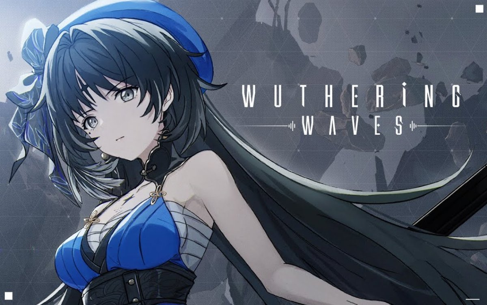
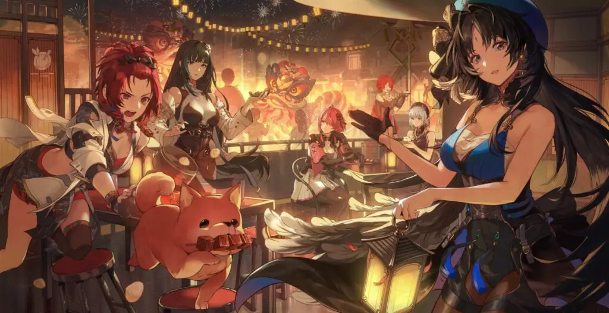

Wuthering Waves é o novo RPG em mundo aberto da Kuro Game que promete combates emocionantes e um vasto catálogo de personagens. Após dois anos de espera e alguns betas que deixaram o público ansioso, o jogo finalmente será lançado nesta quarta-feira (22) e poderá ser baixado a partir de 23h (horário de Brasília). O MMMRPG da Kuro Game é um gacha free-to-play. A história do jogo é descrita como "você acorda de seu sono como Rover, acompanhado por um elenco vibrante de Resonators em uma jornada para recuperar suas memórias perdidas e superar o Lamento". O jogo de ação se passa no cenário pós-apocalíptico no continente de Erivale, devastado pela guerra entre Resonators e Screaming Souls. A missão do jogador é restaurar a paz e o equilíbrio.
Venha Decobrir mais sobre:
| História | Personagens |
|---|---|
|  |  |
Estas são as informações que temos até agora, espero vocês dia 22/05.